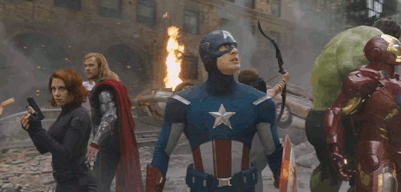

Clifton Alexander, Jr.
Director of Client Relations and Media
Northwestern Mutual
About Me
I am a recent graduate of Kean University, with a major in Finance and a minor in Economics. I have a strong knowledge of financial markets and current economic trends. I have gained Finance experience working as an intern at EverBank Commercial Finance and currently work as a Director of Client Relations and Media at Northwestern Mutual. I was the winner of the 2016 Lockheed Martin Missions Systems and Training International Expansion Case Study. My personal motivations stem from wanting to expand financial literacy to minorities and lower income households. My goal is to use my passion for technology to help provide an avenue for people to gain financial knowledge and opportunities.
Why Should I be Accepted?
My thirst for learning and my ability to pick up on new information are just some of the reasons that I believe that I would be a good fit for this program. I am very pasionate about technology and I would like to learn how to use my coding skills to disrupt the financial learning space. My goal is to find a way to expand financial literacy to as many people as possible through tech. I beliect that this program would give me the tools I need to achieve this goal and positively impact the communities around me.
My Favorite Movies

|
Pulp Fiction
The lives of two mob hit men, a boxer, a gangster's wife, and a pair of diner bandits intertwine in four tales of violence and redemption. |
|
The Avengers
Earth's mightiest heroes must come together and learn to fight as a team if they are to stop the mischievous Loki and his alien army from enslaving humanity. |
 |

|
Oceans 13
Danny Ocean rounds up the boys for a third heist, after casino owner Willy Bank double-crosses one of the original eleven, Reuben Tishkoff. |
Contact Me!
Feel Free to reach out to me via email